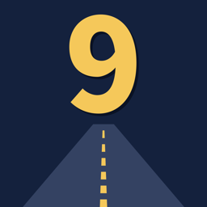

Road to 9
GCSE & KS3 Revision
Short, focused revision videos for GCSE and KS3 students in the UK – built around the official exam board specifications.
Now showing: GCSE French vocabulary
Every word is checked against the official AQA GCSE French vocabulary list (new specification, exams from 2026) and labelled Foundation, Higher or bonus. In each video you listen, repeat out loud, see the word in a real sentence, learn one grammar tip, then test yourself.
🇭🇰 Hong Kong edition: French + English + Traditional Chinese on screen.
Coming next
- More GCSE French topics, then Spanish and German
- The most-tested topics from past papers
- Exam technique for the new GCSE question types: dictation, read aloud, role-play